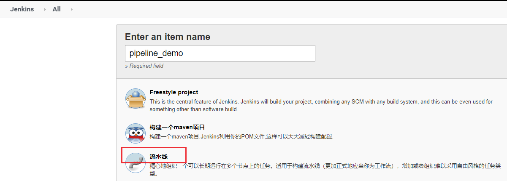
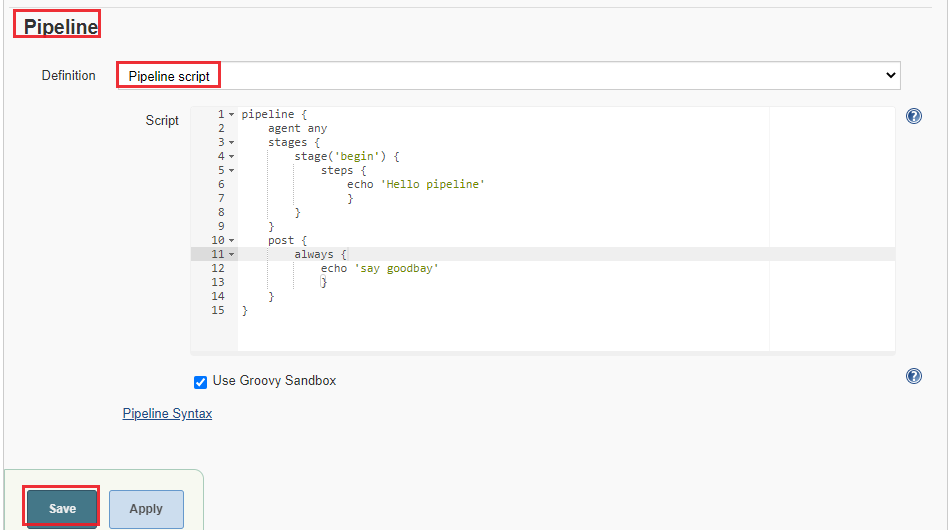
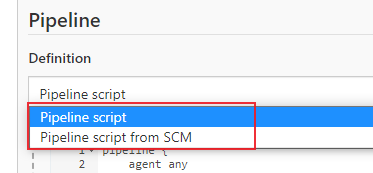
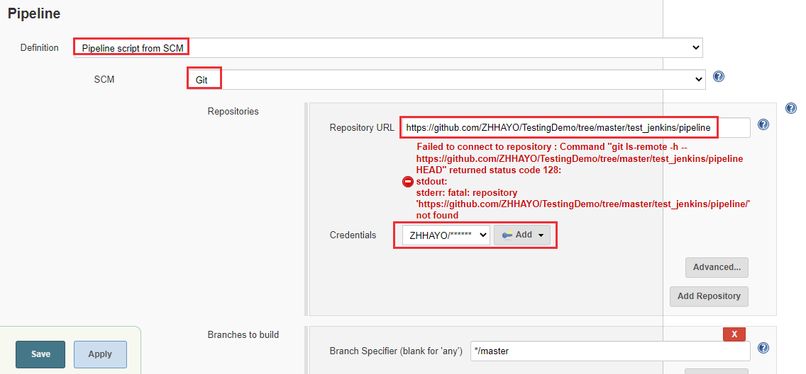
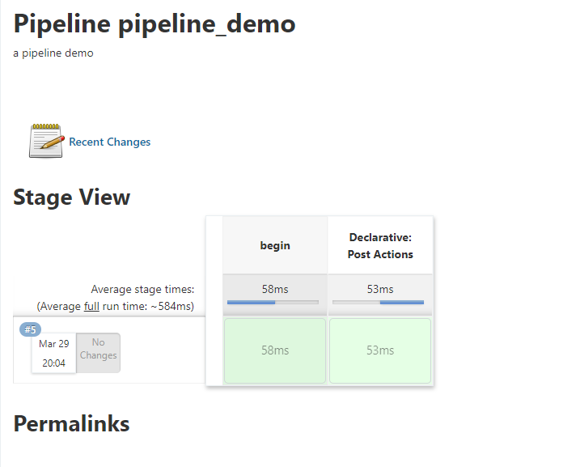
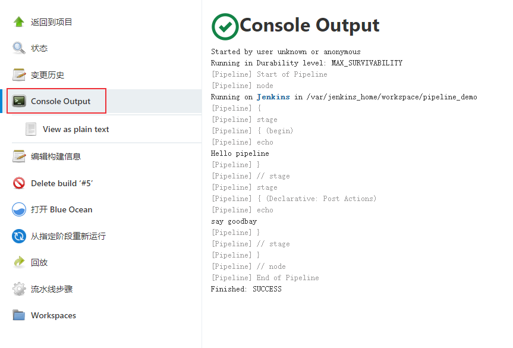

Pipeline在Unix/Linux系统中经常用到，Pipeline将一个命令/程序/进程的输出发送到另一个命令/程序/进程，以进行进一步处理。比如：cat test.txt | grep test1。Jenkins 中的Pipeline借用了Unix/Linux中的 Pipeline思路，实现像流水线一样来调度Jenkins任务，通过Jenkinsfile来描述整个持续集成流程。
一个简单的 Pipeline项目
先来看看如何在Jenkins上创建一个简单的Pipeline。
新建pipeline任务
新建一个pipeline任务

可以设置构建触发方式。
接下来开始编写Pipeline脚本，可选择Pipline script或者Pipline script from SCM。
- Pipline script模式是将脚本写在下面的输入框中
- Pipline script from SCM是将Pipeline script放到Git或者SVN上，执行的时候从上面拉下来执行。
Pipeline Script
选择 Pipeline Script，编写如下代码:
1 | pipeline { |
- stages：添加执行步骤
- post：任务执行完成后执行的操作

Pipeline Script from SCM
Pipeline Script除了写在jenkins界面以外，也可以放入git源码库进行管理
在 Jenkins Pipeline任务中选择 Pipeline script from SCM

添加git源码地址，在 Script Path中填写需要运行的Jenkinsfile文件所在的地址

构建
创建完成后保存，点击Build Now，我们可以看到不同构建阶段进度

构建日志：

Jenkinsfile语法
Jenkinsfile支持两种语法形式:
- Scripted pipeline - 脚本式流水线语法，基于 Groovy语言构建的通用 DSL（Domain-specific language，领域特定语言）
- Declarative pipeline - 声明式流水线语法，在v2.5之后引入，支持结构化方式，提供了更丰富的语法特性。
DSL是专注于某个应用领域的计算机语言。和Python、Java等这种通用语言（General-purpose Language, GPL）不同的是，DSL是一种为了特定领域而设计的开发语言，比如Web 应用使用的HTML、可扩展标记语言XML、SQL语言等。
通常情况下，流水线中声明式和脚本式语法结合使用。
Declarative pipeline
声明式流水线语法必须包含在一个 pipeline块内:
1 | pipeline { |
pipeline块中主要由Sections, Directives, Steps, 或者赋值语句组成。
1 | pipeline { |
Sections
Sections包括agent、stages、steps和post。
agent
agent定义 pipeline执行节点，必须在pipeline 块的顶层定义。
主要参数：
any：可以在任意可用的 agent上执行pipelinenone：pipeline将不分配全局agent，每个 stage分配自己的agentlabel：指定运行节点agent的 Labelnode：自定义运行节点配置,- 指定 label
- 指定 customWorkspace
docker：使用给定的容器执行流水线。dockerfile：使用源码库中包含的Dockerfile构建的容器来执行Pipeline。kubernetes：在kubernetes集群执行Pipeline
上述参数也可以用于stage中。
示例脚本：
1 | pipline { |
stages
包含一个或多个 stage, Pipeline的大部分工作在此执行。stages也是必须指定的指令，没有参数。此外，每个 pipeline块中必须只有一个 stages。
stage也必须指定，需要定义stage的名字：
1 | pipeline { |
steps
steps位于stage块中，也是必须设置的指令，无参数。
steps块中可以包含script块，可用于存放Scripted Pipeline 脚本：
1 | pipeline { |
post
post是在Pipeline或者 stage执行结束后的操作，不是必须出现的指令，可设置以下触发条件：
always：无论 Pipeline或者stage运行完成的状态如何都会运行changed：只有当前 Pipeline或者stage运行的状态与先前运行状态不同时才能运行fixed：只有当前一次构建失败或者不稳定，而当前 Pipeline或者stage运行成功时运行regression：前一次运行成功，而当前Pipeline或者stage运行状态为failure, unstable 或者 aborted时运行aborted：只有当前 Pipeline或者stage处于“aborted”状态时才能运行。通常是手动终止。failure：当前 Pipeline或者stage处于“failed”状态时才运行success：当前 Pipeline或者stage具有“success”状态时才运行unstable：当前 Pipeline或者stage具有“unstable”状态才运行unsuccessful：当前 Pipeline或者stage不是“success”状态时运行cleanup：不管Pipeline或stage的状态如何，在每一个post条件被执行之后运行。
示例脚本：
1 | pipeline { |
Directives
Declarative pipeline也包含了各种指令，比如environment，options，parameters，triggers等，指令不是必须出现的指令。
environment
定义 Pipeline或stage运行时的环境变量，位于pipeline块顶部的 environment 定义的环境变量适用于流水线中的所有步骤，stage 中定义的 environment 只能应用于 stage 中的步骤。1
2
3
4
5
6
7
8
9
10
11
12
13
14
15
16pipeline {
agent any
environment {
CC = 'clang'
}
stages {
stage('Example') {
environment {
hlw = 'hello world'
}
steps {
echo hlw
}
}
}
}
options
options指令允许在Pipeline内部定义 pipeline专有属性。
pipeline可用选项：
buildDiscarder：保持构建的最大个数，超过最大构建数后会丢弃以前的构建。checkoutToSubdirectory：在工作区的子目录中执行自动源代码控制checkout 。disableConcurrentBuilds：禁止并行执行 pipeline任务，可用于防止同时访问共享资源。disableResume：如果控制器重启，不允许管道恢复。newContainerPerStage：与docker或dockerfile顶级代理一起使用。指定后，每个阶段将运行在同一节点上的新容器实例中，而不是所有阶段都运行在同一个容器实例中。overrideIndexTriggers：允许重写分支索引触发器的默认处理方法。如果分支索引触发器在多分支或组织标签处被禁用，options { overrideIndexTriggers(true) }将仅为该job启用。否则，options { overrideIndexTriggers(false) }将只禁用该job的分支索引触发器。preserveStashes：保留已完成构建的stashes ，以便在stage 重启时使用。例如:options {preserveStashes()}用于保存最近完成构建的stashes ，或者options {preserveStashes(buildCount: 5)}用于保存最近完成构建的五个堆栈。quietPeriod：为Pipeline设置静默期(以秒为单位)，覆盖全局默认值。例如:options {quietPeriod(30)}skipDefaultCheckout：在agent指令中，默认情况下跳过从源代码Checkout代码。例如:options {skipDefaultCheckout()}skipStagesAfterUnstable：一旦构建状态变为 “Unstable“ 状态，就跳过stages。例如:options {skipstagesafterstable ()}retry：失败后，重试整个 Pipeline的次数例如:options { retry(3) }timeout：为Pipeline的运行设置一个超时时间，在此之后，Jenkins就中止Pipeline。例如:options {timeout(time: 1, unit: 'HOURS')}timestamps：在所有由Pipeline运行生成的控制台输出前加上间。例如:options {timestamp ()}parallelsAlwaysFailFast：将流水线中所有后续并行阶段的failfast设置为true，用于并行执行stage中。例如:options {parallelsAlwaysFailFast()}
stage的options指令类似于Pipeline的options指令。然而，stage选项只能包含retry, timeout, 或 timestamps 的步骤，或者与stage相关的声明性选项，比如skipDefaultCheckout。
在stage中，在进入agent或检查任何 when条件之前调用options指令中的步骤。
stage 可用选项：
skipDefaultCheckouttimeout：为当前stage的运行设置一个超时时间retrytimestamps
示例脚本：
1 | pipeline { |
parameters
parameters 指令定义 pipeline的专有参数列表，支持参数类型:
string：字符串类型text：文本, 可包括多行booleanParam：布尔参数choice：choice 参数password：密码参数
示例脚本：
1 | pipeline { |
triggers
triggers 指令定义了 Pipeline自动化触发的方式，主要包括3种触发器：
cron：接受一个cron样式的字符串来定义 Pipeline触发的间隔周期，例如:triggers { cron('H */4 * * 1-5') }pollSCM：接受一个cron样式的字符串来定义 Jenkins检查SCM源码更新的常规间隔；如果存在新的更改，Pipeline将被重新触发。例如:triggers { pollSCM('H */4 * * 1-5') }upstream：接受以逗号分隔的job字符串和阈值。当字符串中的任何作业以最小阈值完成时，将重新触发Pipeline。例如:triggers { upstream(upstreamProjects: 'job1,job2', threshold: hudson.model.Result.SUCCESS) }
更多cron表达式语法介绍可参考 Linux cron定时介绍。
示例脚本：
1 | pipeline { |
stage
前面介绍过，stage指令位于stages块中，也是必须设置的指令，应至少包含一个。
tools
定义自动安装和PATH上的工具。如果没有指定agent，则忽略此参数。
支持如下工具：
- maven
- jdk
- gradle
示例脚本：
1 | pipeline { |
其中工具名 apache-maven-3.0.1 必须在jenkins中预先配置：Manage Jenkins -> Global Tool Configuration 。
input
stage 的 input 指令允许使用 input step提示输入。 在应用了此 options 后，进入 stage 的 agent 或评估 when 条件前， stage 将暂停。 如果 input 被同意, stage 将会继续。
可配置选项如下：
message：必须指定，是呈现给用户的信息。id：可选标识符， 默认为stage名称。ok： “ok”按钮的可选文本。submitter：以逗号分隔的用户列表或允许提交input的外部组名。默认允许任何用户。submitterParameter：环境变量的可选名称。如果存在，用submitter名称设置。parameters：提示提交者提供的一个可选的参数列表。 和前面介绍的parameters指令定义方法一样。
示例脚本：
1 | pipeline { |
when
when 指令位于stage指令中，允许流水线根据给定的条件决定是否应该执行阶段，必须包含至少一个条件。
支持以下嵌套条件：
branch：当正在构建的分支与分支模式匹配时执行这个阶段, 例如:
when { branch 'master' }。注意，只适用于多分支流水线。buildingTag：当构建正在构建标记时执行该阶段。例如:when {buildingTag()}environment：当指定的环境变量是给定的值时，执行这个步骤, 例如:
when { environment name: 'DEPLOY_TO', value: 'production' }changelog：如果构建的SCM变更日志包含一个给定的正则表达式模式，则执行该阶段，例如:when { changelog '.*^\\[DEPENDENCY\\] .+$' }changeset：如果构建的SCM变更集包含一个或多个匹配给定模式的文件，则执行该阶段。例如:when { changeset "**/*.js" }changeRequest：如果当前构建是为了一个“change request”(比如GitHub的Pull request, GitLab上的Merge request, Gerrit中的change等)时执行这个阶段。如果没有传递参数，stage在每次变更请求上运行，例如:when { changeRequest() }environment：当指定的环境变量设置为给定的值时执行，例如:when { environment name: 'DEPLOY_TO', value: 'production' }equals：当期望值与实际值相等时执行，例如:when { equals expected: 2, actual: currentBuild.number }expression：当指定的Groovy表达式为true时执行, 例如:when { expression { return params.DEBUG_BUILD } }。注意，当表达式返回字符串时，它们必须转换为布尔值，或者返回null来计算为false。简单地返回“0”或“false”仍然会被计算为“true”。tag：如果TAG_NAME变量与给定的模式匹配则执行该阶段。例如:when { tag "release-*" }。如果提供了一个空模式，那么如果存在TAG_NAME变量，则该阶段将执行(与buildingTag()相同)。not：当嵌套条件是false时执行这个阶段，它必须包含一个条件，例如:when { not { branch 'master' } }allOf：当所有的嵌套条件都为true时执行，必须包含至少一个条件，例如:when { allOf { branch 'master'; environment name: 'DEPLOY_TO', value: 'production' } }anyOf：当至少有一个嵌套条件为true时执行，必须包含至少一个条件，例如:when { anyOf { branch 'master'; branch 'staging' } }triggeredBy：当当前构建被给定的参数触发时执行。例如:when { triggeredBy 'SCMTrigger' }when { triggeredBy 'TimerTrigger' }when { triggeredBy 'BuildUpstreamCause' }when { triggeredBy cause: "UserIdCause", detail: "vlinde" }
在进入 stage 的 agent 前评估 when
- 默认情况下，如果定义了该
stage的agent，则stage的when条件将在进入该stage的agent之后计算。但是，这可以通过在when块中指定beforeAgent选项来更改。如果beforeAgent设置为true，则首先计算when条件，只有当条件计算为true时才进入agent。
在 input 指令之前评估 when
- 默认情况下，如果定义了
stage的when条件，则不会在input之前求值。但是，这可以通过在when块中指定beforeInput选项来更改。如果beforeInput设置为true,when条件将首先计算，只有当条件计算为true时才会进入input。 beforeInput true优先级高于beforeAgent true。
在 options 指令之前评估 when
- 默认情况下，如果
stage定义了任何options，stage的when条件将在进入该stage的options之后计算。但是，这可以通过在when块中指定beforeOptions选项来更改。如果beforeOptions设置为true，则首先计算when条件，只有当条件计算为true时才会进入options。 beforeOptions true优先级高于beforeInput true和beforeAgent true。
示例脚本：
1 | pipeline { |
并行执行
声明式流水线支持多阶段并行执行，Parallel 块中，当其中任何一个阶段失败时，可以通过添加failFast true来强制所有并行阶段都中止。也可以在管道定义中添加一个options : options {parallelsAlwaysFailFast() }
1 | pipeline { |
声明式流水线可以将stage放入矩阵单元中，Matrix可以定义一个多维的 name-value组合矩阵，并将其并行运行。具体使用方法可以参考官方文档。
Scripted pipeline
Scripted pipeline是基于groovy语法定制的一种DSL语言，它的灵活性更高，具有更好的可扩展性。
使用它需要了解一定的groovy语法知识，可参考如下文档：
请看下面的Scripted pipeline脚本，使用了if/else和try/catch/finally流程控制方法，无论构建状态是什么都发送邮件：1
2
3
4
5
6
7
8
9
10
11
12
13
14
15
16
17
18
19
20
21
22
23
24
25
26
27
28
29
30
31
32node('win_agent') {
try {
// 自动化测试
stage('Test') {
TEST_STATU = bat (
script: '''echo autotest''',
returnStatus: true
) == 0
if ("${TEST_STATU}" == "false") {
catchError(stageResult: 'FAILURE') {
echo "测试未通过"
env.LOG = "测试未通过"
}
} else {
echo "测试通过"
env.LOG = "测试通过"
}
}
} catch (exc) {
currentBuild.result = 'FAILURE'
echo "Something failed, I'm in the catch block."
} finally {
stage("email") {
emailext (
subject: '\'构建通知:${PROJECT_NAME} - Build # ${BUILD_NUMBER} - ${BUILD_STATUS}\'',
to: "XXXXXXXX@163.com",
body: '${FILE,path="email.html"}',
)
}
}
}
DSL方法步骤
前面介绍Declarative pipeline和Scripted pipeline语法的实例中，使用到了一些方法步骤，比如sh、echo、emailext等，它们是jenkins插件提供的一些方法步骤，下面举2个例子：
1、bat/sh方法：
1 | STATU = bat ( |
2、catchError方法：捕获到异常后，设置当前构建或者阶段状态设置为FAILURE，并继续执行Pipeline后面的步骤:
1 | stage('Test') { |
也可以用try-catch来实现。
当前jenkins平台支持的更多步骤可以访问 http://
小结
本文介绍了两种pipeline脚本语法，使用pipeline脚本可以使任务调度更加灵活，特别是对于比较复杂的项目。
另外，这两种pipeline脚本语法通常会一起使用，为了让代码更加简洁，建议使用pipeline共享库，将groovy脚本放到共享库中，这样多个pipeline项目就可以共用这些方法，大大减少代码冗余。
参考文档：
- https://www.jenkins.io/zh/doc/book/pipeline/
- https://www.jenkins.io/doc/book/pipeline/syntax/
- https://www.jenkins.io/zh/doc/book/pipeline/syntax
- https://www.jenkins.io/blog/2019/12/02/matrix-building-with-scripted-pipeline/
- https://www.jenkins.io/blog/2016/07/01/html-publisher-plugin/#snippet-generator-to-the-rescue
- https://www.jenkins.io/doc/pipeline/examples/
夫唯不争，故天下莫能与之争。——《道德经》
本文标题:持续集成：Jenkins Pipeline语法介绍
文章作者:hiyo
文章链接:https://hiyongz.github.io/posts/continuous-integration-for-jenkins-pipeline/
许可协议:本博客文章除特别声明外，均采用CC BY-NC-ND 4.0 许可协议。转载请保留原文链接及作者。